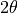

Library Reference - Phasing Operations¶
Save Sequence¶
Save sequence data to a NumPy file.
Parameters:
- Output file
User provided path string for the output NumPy file.
Save Support¶
Save Support data to a NumPy file.
Parameters:
- Output file
User provided path string for the output NumPy file.
Save Residual¶
Save Residual data to a NumPy file.
Parameters:
- Output file
User provided path string for the output CSV file.
Save PSF¶
Saves the internally stored Point Spread Function data to a NumPy file.
Parameters:
- Output file
User provided path string for the ouput NumPy file.
Co-ordinate Transformation¶
Perform a co-ordinate transformation on either sequence data or an input array. The transformation is derived using the principles as demonstrated by Pfeifer, M.A. .
The generated co-ordinate array is stored internally and is accessible for viewing with the memory array keyword memorycoords.
Parameters:
- Transform from
Source from which to perform the transformation against.
- Transform type
Transform in real or reciprocal space.
- Input data
User provided path string to the input NumPy file.
- Output amp file
User provided path string for the output amplitude VTK file.
- Output phase file
User provided path string for the output phase VTK file.
- Rocking curve type
Theta (
 ) or Phi (
) or Phi ( ) rocking curve measurement.
) rocking curve measurement.- Array binning
Amount by which the array was
binned. See the section on binning for further details.- 2theta
 angle.
- d theta
Increment angle for
rocking curve measurement.- phi
- angle.
- d phi
Increment angle for
rocking curve measurement.- Pixel {x,y} (microns)
Detector pixel dimensions, in microns.
- wavelength (nm)
Wavelength of light used in experiment. Units of nanometres.
- Arm length (m)
Distance from the sample to the centre of diffraction pattern at the detector. Units of metres.
- CCD x-axis flip
Reverse the direction of detector x-axis readout. Required for some PI CCD detectors.
Experimental geometry:
Curved arrows show the direction of rotation of object (as opposed to the axis). The beam is assumed to travel along the positive  direction.
direction.
Save Co-ordinates¶
Save Co-ordinates data to a NumPy file.
- Output file
User provided path string for the output NumPy file.
Note
A co-ordinate transformation must occur prior to this operation.